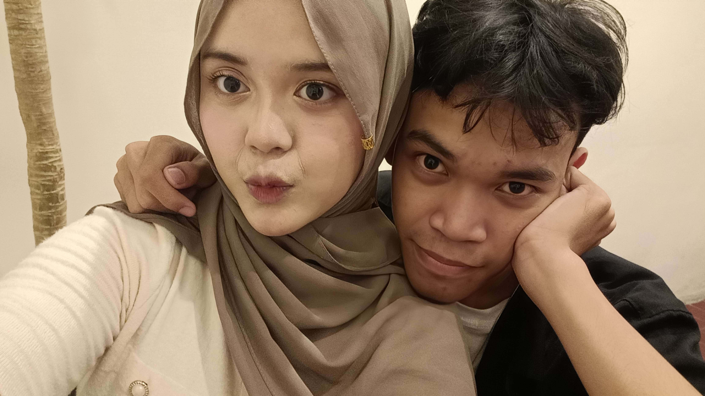
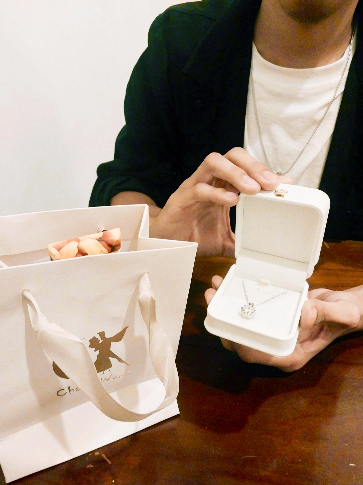
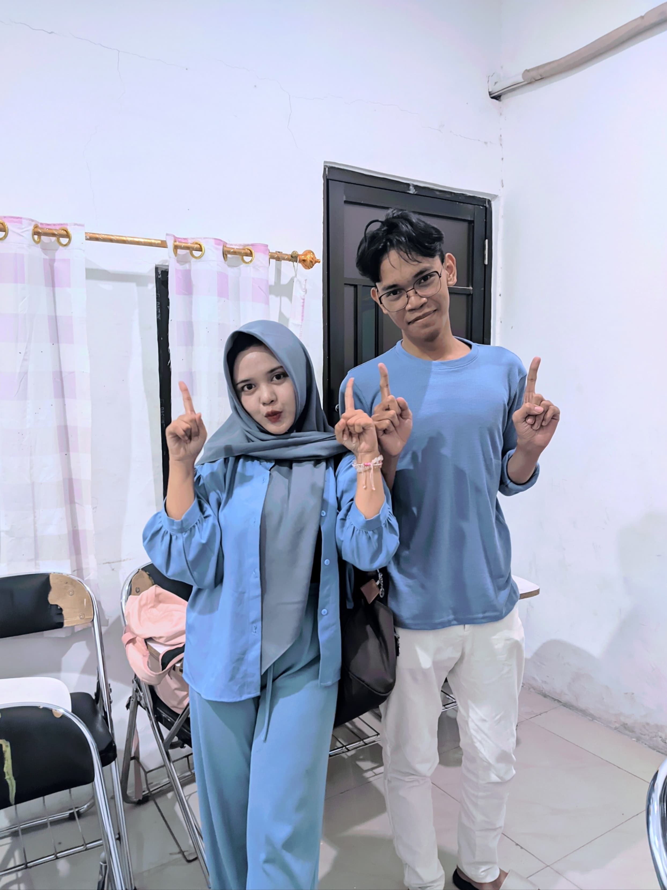
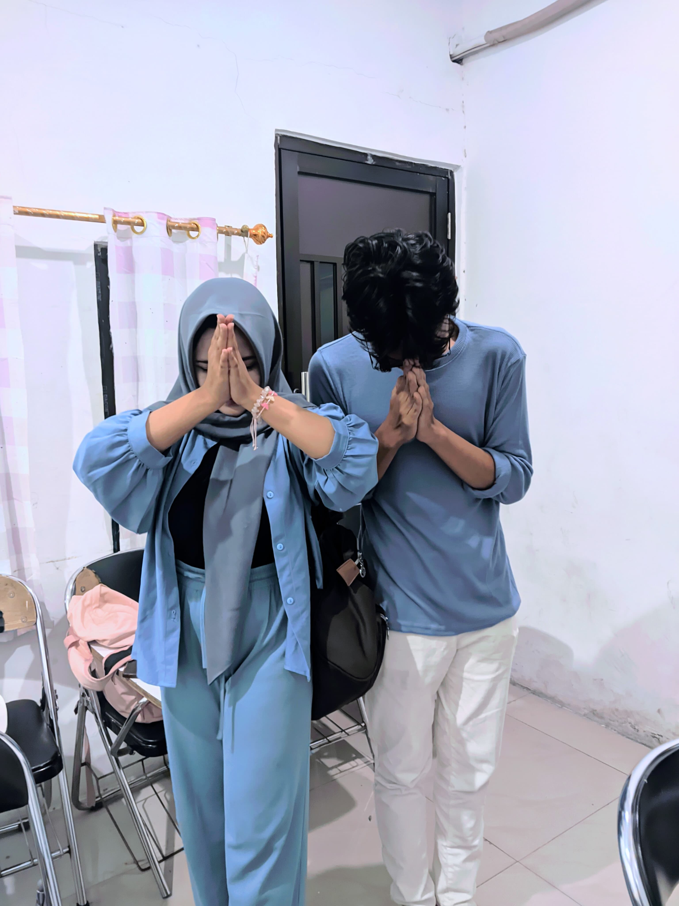
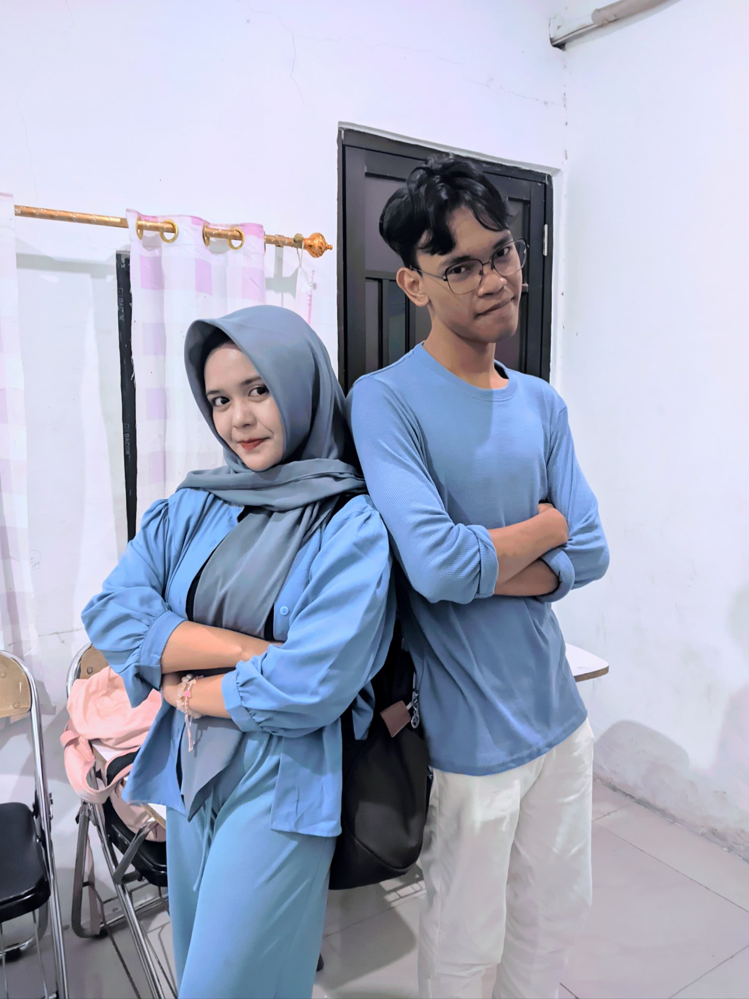
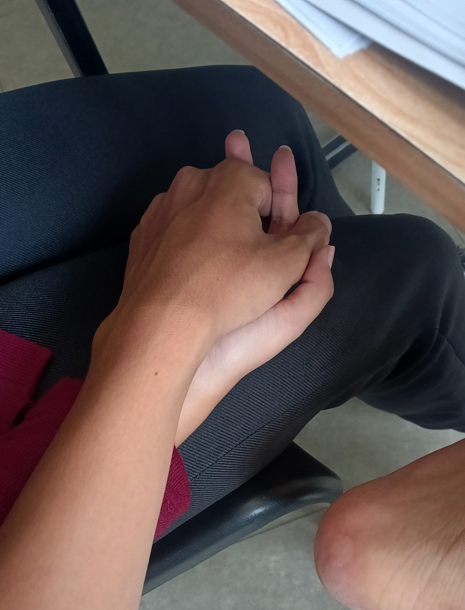
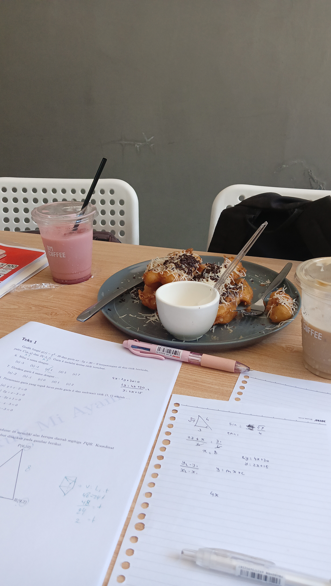

Salwa Atika Wardani
Pertama-tama makasih ya salwa udah meluangkan secercah waktumu buat buka website jelek inii wkwkwk.
Ini mungkin hadiah terakhirku buat kamuu, isinya kenangan-kenangan kita berdua.
Btw aku buat ini biar kamu inget atau bisa nostalgia aja si kalo kita berdua pernah bersama hahaha....
Selir Hati
— T.R.I.A.D
"Eitss... sebelum itu kita setel lagu kesukaanmu dulu ga sii."

The first fotbar
Hadiah & coklat for you17 Februari 2026
Ultah dan Hadiah Buat Kamu
First date kitaa...
Hahaha kaget yaa waktu itu tiba-tiba aku ngasi kado buat kamu.
Makasih yaa udah mau nerima hadiah sama coklatnya.
"By the way, selain parasmu, aku juga mulai menyukai suaramu, sifatmu, dan cerita-cerita yang keluar dari mulut kecilmu itu..."

Fotbar 1
Fotbar 2
Fotbar 330 Maret 2026
Duo Biru-biru💙
Jujur aku kaget tiba-tiba baju kita couple dan berakhir fotbar berdua.
Jangan lupa besoknya kita berdua langsung dapet merah di SNBP hahaha...
"Selain dalam ingatan, syukurnya kita pernah mengabadikan kenangan kita berdua dengan beberapa potretan"

Genggam tangan
Study date5 April 2026
Study Date UTBK
Date kesukaan kita niehh.. wkwkwk.
Seru bangett bisa ngajarin kamu, liat bingungnya kamu, liat plonga plongonya kamu wkwkwk.
Makasii juga udah ngebolehin aku ngenggem sama senderan di bahumu.
"Saat disampingmu aku merasa dapat menghadapi dunia dengan segala masalahnya..."
17 April 2026
Bunga For You
Kaget untuk kedua kalinya? hahaha...
Lucu banget liat ekspresimu waktu aku kasih bunga ituu.
"Bunga yang dibuat dengan tangan dan keringatku sendiri, Semoga itu abadi..."
25 Mei 2026
Akhirnya Lolos Berdua
BAGUS JJ-NYA AKU SUKAA....
Terimakasih buat diri kita berdua udah saling support, saling bantu, serta saling mendo'akan satu sama lain.
"Usaha dan do'a kita ternyata tidak menghianati hasilnya yaa... selamat untukmu dan untukku...."
Terima kasih untukmu yang telah bersedia hadir di hidupku.
Sekali lagi, aku mau banyak-banyak berterimakasih kepadamu.
Aku ga akan pernah menyesal atas kehadiranmu di hidupku. Entah itu sementara atau akan selamanya, aku sangat bersyukur dapat pernah mendukung dan berdiri di sampingmu.
Terima kasih telah menjadi Teman, Partner, Rekan, Support system, HTS, sekaligus Orang yang dapat kucintai sepenuh hati.
Entah takdir akan menyatukan kita kembali ataupun tidak, aku sudah mencoba untuk ikhlas dan lapang dada untuk berpisah denganmu wahai wanita favoritku.
Jangan pernah lupain aku yaa... sebagai sesosok yang pernah datang dan mengisi kekosongan di kehidupanmu.
— Haqqi N.